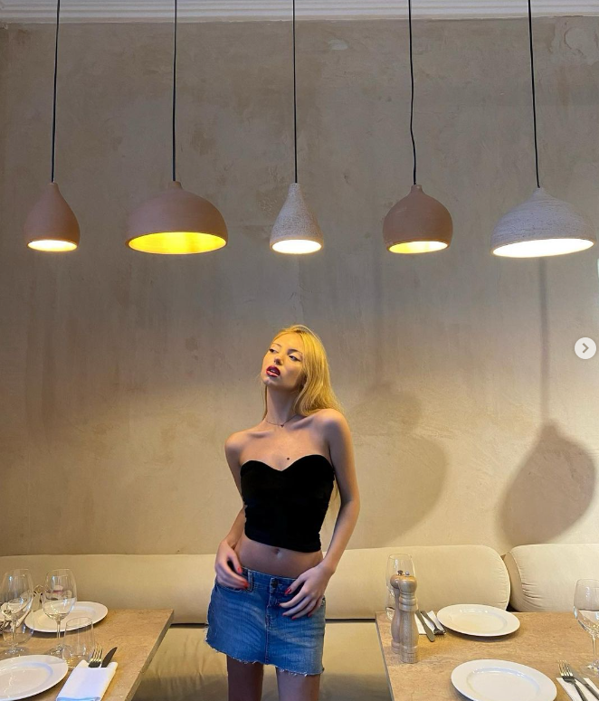

გამარჯობა, ჩემი სახელია ლიზა მამუკაძე. ვარ 19 წლის ვსწავლობ უნივერსიტეტ GIPA-ში ვარ მეორე კურსზე. ვარ დაინტერესებული გრაფიკული დიზაინით.მსურს მოვიპოვო საჭირო გამოცდილება, რომ გავხდე პროფესიონალი ამ სფეროში.ძლიერი კომუნიკაციისა და ორგანიზაციული / დაგეგმვის უნარები. საკუთარი სამუშაოს დროულად მართვისა და ორგანიზებულობა. არ შესანიშნავი კომუნიკატორი, გუნდური თანამშრომელი, ვარ ძალიან პუნქტუალური და პერფექციონისტი. არასდროს ვაგვიანებ და ჩემს საქმეს ყოველთვის შესანიშნავად ვაკეთებ. მე მიყვარს დახმარება და კომუნიკაცია. ყოველთვის ვაღწევ ჩემს მიზნებს და ყველაფერს გავაკეთებ, რომ წარმატებული ვიყო. მე ერთგული ვარ ჩემს კარიერისა და მიზნების მე მსურს ვისწავლო, განვვითარდე პიროვნულად და პროფესიულად განათლება: საქართველოს საზოგადოებრივ საქმეთა ინსტიტუტი (GIPA) ციფრული მედიისა და კომუნიკაციის გამოცდილება მივიღე პიარ მენეჯერად მუშაობის დროს. ძირითადი უნარები: მარკეტინგი პროექტის მენეჯმენტი ბიუჯეტის დაგეგმვა სოციალური მედია ორგანიზირება კომუნიკაცია.
